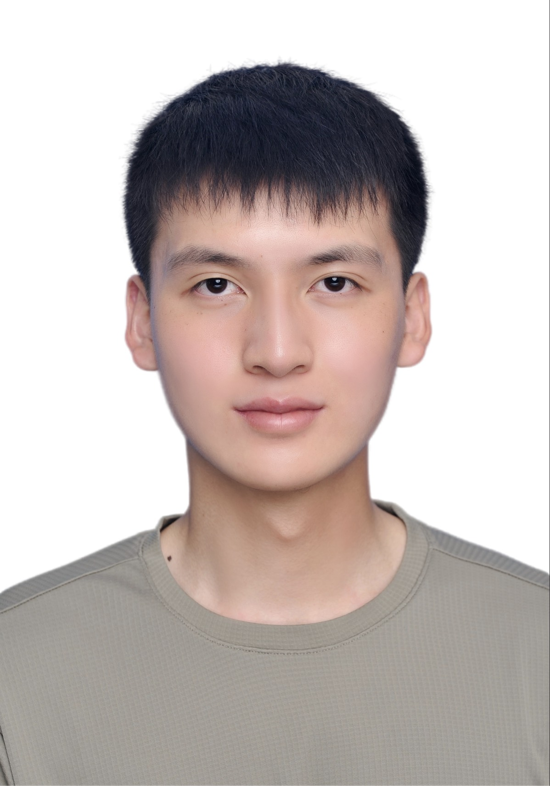

项目经验
集成 AI 对话、实时社交、协同观影与视频企划管理的现代化单页应用。通过该项目展示了扎实的全栈开发能力与复杂业务逻辑的处理能力。
前端核心实现 (React 19)
- 基于 Socket.IO 实现秒级同步的“浪漫放映室”，支持多用户实时同步播放进度。
- 引入 Zustand 进行轻量级全局状态管理，优化 AI 对话流式响应性能。
- 全面适配移动端，采用响应式布局解决复杂看板在大屏与小屏间的切换体验。
后端能力体现 (NestJS)
- 模块化网关设计：分离 Chat 与 WatchParty 命名空间，利用 Room 机制实现精准消息路由。
- 流式响应 (SSE)：对接 AI 模型接口，实现打字机效果的流式输出与历史上下文维护。
- 安全与鉴权：手动解析 WebSocket 握手请求中的 JWT，封装统一的 Socket 鉴权中间件。
- 高性能存储：集成 MongoDB 进行消息持久化，配合 Redis 缓存提升实时交互效率。
2026 初试成绩单
总分 (Total)
393
专业排名：第 3 名
英语 (二)
83
数学 (二)
130
图形图像技术
122
思想政治理论
58
工作经验
南京何尝摄影有限公司
前端开发工程师 (实习)
和拍约拍顾客/摄影师端 (小程序)
uniapp、uViewPlus、Pinia、OSS、Ping++
- 独立负责从 0 到 1 的项目落地，涵盖开发、测试及上线全流程方案。
- 构建复杂订单管理业务流（接单、验券、摄影上传、精修、评价等），对接公众号订阅与短信通知。
- 基于 SSE (Server-Sent Events) 实现服务端推送验券消息，优化二维码生成逻辑，压缩时间至 3s 内。
- 针对摄影行业特性，独立构建日期时间选择器、多图片选择器及瀑布流+懒加载的大图展示方案。
- 对接阿里云 OSS，实现图片裁剪、压缩及异步分包加载，解决小程序包体积限制。
- 设计并实现基于自定义逻辑的埋点监控方案，采用实时+统一上报的分级处理机制。
和拍传图平台 & 和拍管理系统 (Web)
Vue、Vite、ECharts
- 构建登录权限验证与白名单策略，对接短信验证码及人类行为验证功能。
- 设计并实现基于 RBAC 模型 的权限控制系统，支持角色分配及页面/按钮级权限控制。
- 配合 FuseJS 实现高性能模糊搜索能力，支持英文、拼音及路由检索。
- 封装通用筛选栏组件，通过配置化方案快速适配不同页面的复杂筛选需求。
教育背景
南通大学
软件工程 · 本科
2020 - 2024
上海大学
上海电影学院 · 电子信息 (拟录取申请中)
2026 - 至今
所获荣誉
蓝桥杯全国赛区一等奖
国赛一等奖第十四届蓝桥杯全国软件和信息技术专业人才大赛 Web 应用开发组
英语四级
544
英语六级
506
专业技能储备
前端开发
React.js
Vue.js
Tailwind CSS
TypeScript
后端服务
Node.js
Nest.js
Koa.js
MySQL / Redis
AI & 深度学习 (进阶中)
Python / PyTorch (Learning)
Prompt Engineering
LLM Application
学术进阶与学习计划
深度学习基础构建 (当前阶段)
- ● 数学基础巩固：系统复习线性代数（矩阵运算）、概率论及微积分，为理解神经网络背后的数学原理打下基础。
- ● 理论学习：正在通过吴恩达《Deep Learning Specialization》系统学习 CNN、RNN 等基础架构。
- ● 工具链掌握：熟练掌握 Python 科学计算栈 (NumPy, Pandas)，并开始上手 PyTorch 框架进行基础模型搭建。
MAGIC Lab 匹配方向
- ● 智能影视内容生成：计划深入研究 Diffusion Models 与 Transformer 在视频生成领域的应用。
- ● 技术艺术跨界：利用扎实的 Web 开发能力，探索 AI 模型在前端实时交互、影视创作辅助工具中的落地。
- ● 科研潜力：凭借 393 分的初试成绩（数学 130 分）和蓝桥杯一等奖的工程底子，有信心在导师指导下快速补齐科研短板。
研究志向与 MAGIC Lab
我对 AIGC 与影视艺术的融合 充满热忱。希望能利用我扎实的工程开发能力，深入探索 视频理解、图像生成 等前沿技术。MAGIC Lab 对“智能内容理解与生成”的追求正是我向往的研究高地。
视频理解与分析
生成式 AI 创作
智能人机交互